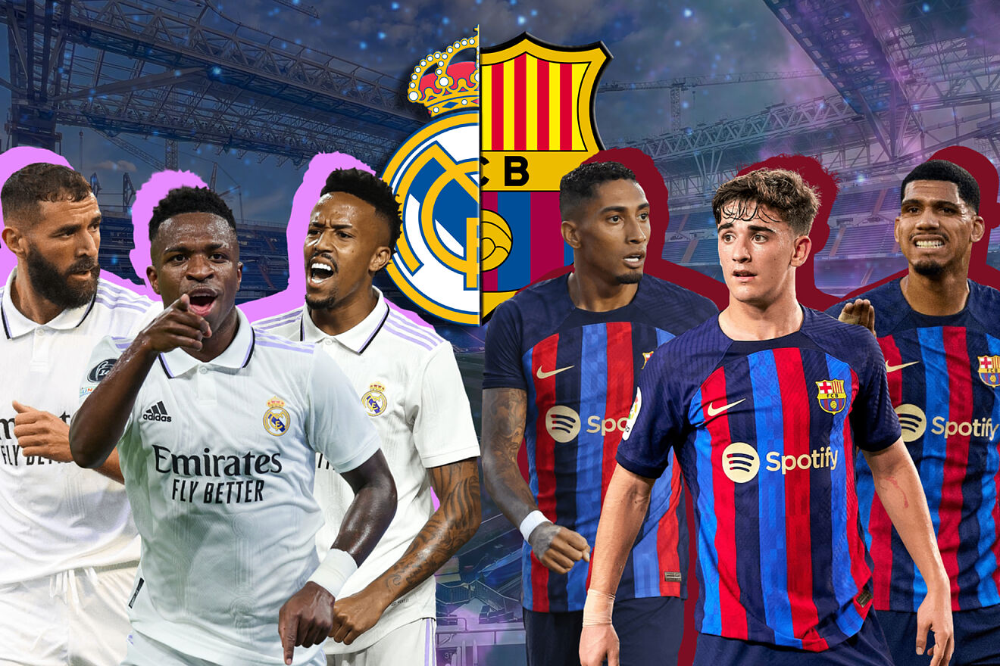

EL CLÁSICO
El clásico español, conocido entre los medios de comunicación y los aficionados como «El Clásico», es el partido de fútbol que enfrenta al Real Madrid Club de Fútbol y al Fútbol Club Barcelona. Su relevancia ha crecido hasta convertirse en la rivalidad futbolística —y/o deportiva— más importante del ámbito español, situándose también como el encuentro entre clubes más seguido mundialmente del citado deporte, con aproximadamente 650 millones de espectadores de media entre 2012 y 2020, logrando colocarse entre los tres acontecimientos deportivos más seguidos del mundo junto con la final de la Copa Mundial de fútbol de Sudáfrica 2010 y de los Juegos Olímpicos de Pekín 2008 que llegaron a 700 y 600 millones de espectadores respectivamente. También fue posicionado por la prestigiosa revista World Soccer en el primer puesto de los "World Soccer’s 50 Greatest Derbies" como el clásico de fútbol más importante del mundo.6
Pese a que el término se ha establecido como el calificativo para dichos encuentros, cuando empezó a utilizarse hacía referencia al encuentro que más veces se había repetido entre dos clubes españoles a nivel nacional,n. correspondiendo históricamente a los «enfrentamientos entre el Athletic Club y el Real Madrid C. F.» quienes hasta el comienzo de la temporada 2011-12 se habían enfrentado 215 veces entre Liga y Copa. A partir de entonces, fue superado por los enfrentamientos entre el Fútbol Club Barcelona y el Real Madrid Club de Fútbol, aunque bien es cierto que ya se le atribuía el calificativo a estos enfrentamientos desde hacía tiempo atrás debido a que en los últimos años fueron los equipos con mejores registros y éxitos de España. En los últimos años del siglo xx estos encuentros fueron denominados como el partido del siglo en un énfasis de la prensa por dar aún más relevancia al enfrentamiento. En 2021 fue presentado por LaLiga un logotipo e identidad visual propia del enfrentamiento para consolidar su imagen y reconocimiento a nivel internacional.
